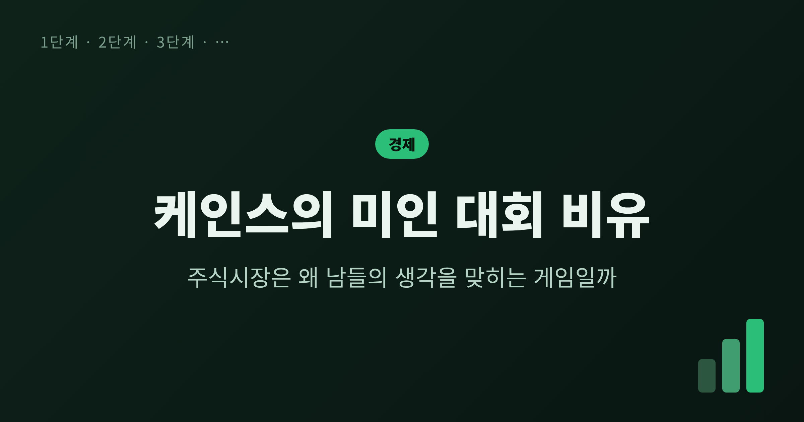
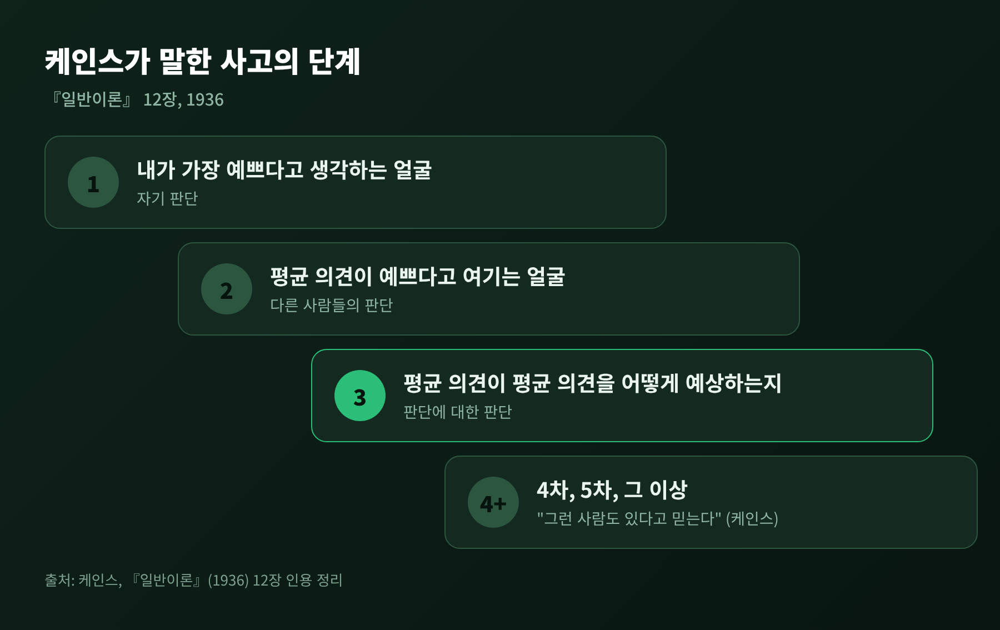
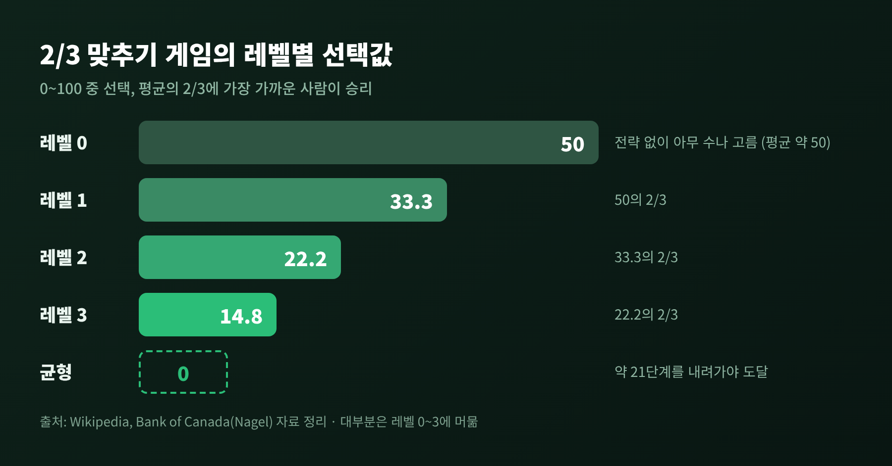
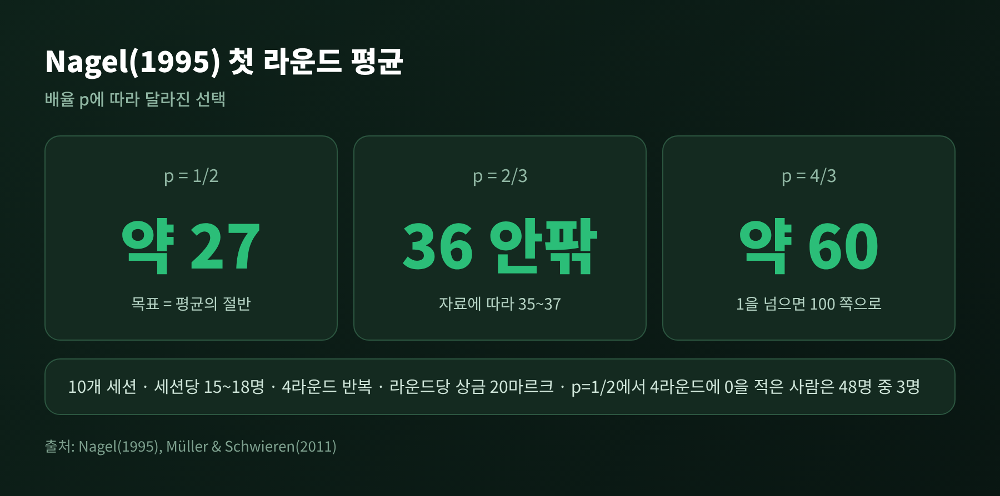
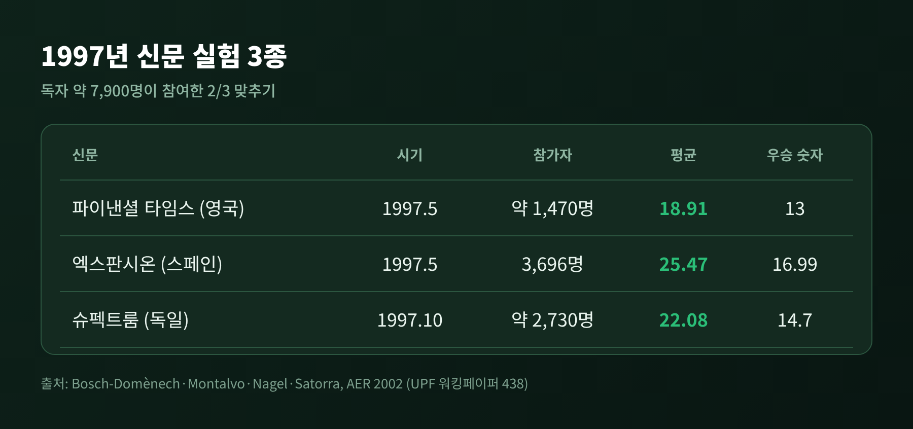
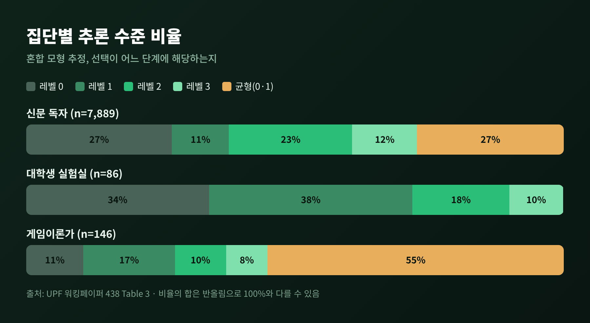

오늘은 케인스의 미인 대회 비유에 대해 이야기해 보려 합니다. 1936년 『일반이론』 12장에 나오는 짧은 비유이고, 주식시장을 설명할 때 지금도 자주 불려 나옵니다.
이 비유는 실험실에서 숫자 게임으로 옮겨져 실제로 측정되었습니다. 어떤 실험이었고 무엇이 드러났는지, 그리고 시장을 설명하는 데 어디까지 쓸 수 있는지 차례로 정리해 보겠습니다.
세 줄 요약
- 케인스는 투자를 "평균 의견이 무엇이라고 예상할지"를 맞히는 경연에 빗댔습니다.
- 이를 숫자로 옮긴 '평균의 2/3 맞추기' 실험에서 사람들은 대체로 1~3단계까지만 생각했습니다.
- 이 게임은 시장 심리를 이해하는 틀이지, 버블을 설명하거나 예측하는 도구는 아닙니다.
본 글은 일반 교양과 교육을 위한 정리이며, 특정 종목이나 투자 판단을 권유하지 않습니다.
케인스는 전문적인 투자를 신문 경연에 견주었습니다. 참가자는 100장의 사진에서 가장 예쁜 얼굴 6개를 고릅니다. 상은 참가자 전체의 평균 선호와 가장 가깝게 고른 사람에게 돌아갑니다.
이 규칙에서는 내 취향이 아무 소용이 없습니다. 내가 예쁘다고 느끼는 얼굴을 고르면 지는 경우가 많습니다. 다른 사람들이 예쁘다고 여길 얼굴을 골라야 합니다.
케인스는 사고의 깊이를 단계로 나눕니다. 자기 판단으로 가장 예쁜 얼굴을 고르는 것이 1단계입니다. 평균 의견이 예쁘다고 여기는 얼굴을 고르는 것이 2단계입니다. 원문 표현으로는 "평균 의견이 평균 의견을 무엇이라고 예상할지 예상하는" 3단계에 이르면, 그는 "4차, 5차, 그 이상을 실행하는 사람도 있다고 믿는다"고 덧붙입니다.

주식에 대입하면 이렇습니다. 기업의 진짜 가치가 얼마인지보다, 다른 투자자들이 얼마라고 믿을지가 단기 가격을 좌우할 수 있다는 뜻입니다. 물론 이는 비유입니다. 시장의 모든 거래가 이런 구조라는 주장은 아닙니다.
미인 대회는 측정하기가 어렵습니다. 그래서 경제학자들은 같은 구조를 숫자로 바꿨습니다. 'p-미인 대회' 또는 '평균의 2/3 맞추기'라는 게임입니다.
규칙은 단순합니다. 참가자가 0부터 100 사이의 수를 하나씩 적어 냅니다. 모두의 평균에 2/3를 곱한 값에 가장 가까운 사람이 이깁니다.
이론적인 답은 0입니다. 평균이 최대 100이라면 목표는 66.7을 넘을 수 없으니 그 위의 수는 의미가 없습니다. 그러면 평균은 66.7 이하, 목표는 44.4 이하로 내려옵니다. 이 논리를 되풀이하면 끝내 0에 닿습니다. 모두가 0을 적는 것이 유일한 내쉬 균형입니다.
실제 사람들은 이렇게 움직이지 않습니다. 레벨-k 모형은 그 이유를 단계로 설명합니다. 레벨 0은 전략 없이 아무 수나 고르는 사람입니다. 평균은 50 정도로 봅니다. 레벨 1은 그 50의 2/3인 33.3을 적습니다. 레벨 2는 레벨 1을 예상하고 그 2/3인 22.2를 적습니다. 레벨 3은 14.8입니다.

균형인 0에 닿으려면 이 계단을 약 21단계 내려가야 한다고 합니다. 대부분의 사람은 0단계에서 3단계 사이에 머뭅니다. 3단계 위로 올라가는 사람은 전체의 5%에도 못 미친다는 보고가 있습니다.
이 게임을 체계적으로 실험한 연구가 Rosemarie Nagel의 1995년 논문입니다. 10개 세션에서 세션당 15~18명이 서로 소통하지 못한 채 참여했고, 같은 집단이 4라운드를 반복했습니다. 라운드마다 20마르크(약 13달러)의 상금을 우승자가 나눠 가졌습니다.
배율 p를 바꿔 가며 실험했습니다. p가 1/2인 세션의 첫 라운드 평균은 약 27이었습니다. 2/3인 세션은 36 안팎이었고, 아무도 0을 적지 않았습니다. (자료에 따라 35~37로 조금씩 달리 보고됩니다.) 33과 22 부근에 선택이 몰렸습니다.
p가 4/3로 1보다 큰 세션은 반대로 움직였습니다. 첫 라운드 평균은 약 60이었습니다. 라운드가 거듭될수록 100을 고르는 비율이 16%, 59%, 68%로 올라갔습니다.
흥미로운 대목은 반복의 효과입니다. 평균이 목표를 향해 조금씩 움직이기는 했지만, p=1/2 세션에서도 4라운드 끝에 0을 적은 사람은 48명 중 3명에 불과했습니다. 논문은 시간이 지나도 사람들의 추론 깊이가 깊어지지는 않는다고 결론짓습니다. 대신 직전 라운드에서 무엇이 정답이었는지를 보고 그쪽으로 조금 보정하는 방식으로 학습합니다. 관측된 조정의 약 73%가 이 규칙과 맞았습니다.

예전에는 실험실에 모인 160여 명이 전부였습니다. 1997년에는 신문이 실험실이 되었습니다. 영국 파이낸셜 타임스, 스페인 엑스판시온, 독일 슈펙트룸 데어 비센샤프트가 독자에게 같은 게임을 냈고, 약 7,900명이 응했습니다.
파이낸셜 타임스에는 약 1,470명이 참여했고 평균은 18.91이었습니다. 이 평균의 2/3인 약 12.6에 가장 가까운 13이 우승 숫자였습니다. 엑스판시온은 3,696명이 참여해 평균 25.47, 우승 숫자 16.99였습니다. 슈펙트룸은 약 2,730명이 참여해 평균 22.08, 우승 숫자 14.7이었습니다.

세 신문 모두 평균은 Nagel의 실험실 값보다 낮았습니다. 선택의 분포에서는 약 33, 약 22, 그리고 균형인 0 또는 1 근처에 봉우리가 나타났습니다.
연구진은 선택을 레벨별로 나눠 추정했습니다. 신문 독자에서는 레벨 1이 약 10.6%, 레벨 2가 약 23.0%, 레벨 3이 약 12.1%였고, 균형(0 또는 1)을 고른 비중이 약 27.3%였습니다. 게임이론가 146명에서는 균형을 고른 비중이 55%를 넘었습니다. 반면 본(Bonn) 대학생 실험실 4개 세션에서는 단 한 명도 균형을 택하지 않았습니다.

같은 문제라도 누가 푸느냐에 따라 사고의 깊이가 달라집니다. 그리고 상대가 어떤 사람들인지에 따라 정답도 달라집니다. 이 점이 케인스 비유의 핵심과 맞닿아 있습니다.
이 연결은 이론으로도 다뤄졌습니다. Allen, Morris, Shin은 2006년 논문에서 단기 보유 투자자 모형을 세웠습니다. 오늘의 가격은 내일 가격에 대한 평균 기대에 달려 있고, 이를 거듭 대입하면 '평균 기대의 평균 기대'가 됩니다. 이 모형에서 가격은 공개된 정보에 지나치게 무게를 두고, 기초가치의 변화에 늦게 반응할 수 있습니다. 저자들은 케인스의 비유가 짧은 투자 시야를 가진 자산가격 모형에서 형식적인 짝을 갖는다고 썼습니다.
그렇다고 미인 대회 게임이 버블을 설명한다고 말하기는 어렵습니다. 한계를 세 가지로 짚어 두겠습니다.
첫째, 게임에는 거래도 가격도 없습니다. 가격이 어떻게 만들어지고 무너지는지를 보여 주지 못합니다. 둘째, 위의 이론 모형도 저자들이 직접 인정하듯 양식화된 모형입니다. 급등과 급락을 포착하지 못하고, 군집 행동을 직접 다루지도 않습니다. 셋째, 레벨-k가 데이터와 맞는다고 해서 사람들이 실제로 그렇게 생각한다는 증거는 아닙니다.
특정 역사적 버블이 미인 대회 구조로 일어났다고 단정하는 것도 이 글의 근거 밖입니다. 이 개념은 시장 심리를 바라보는 하나의 렌즈로 쓰는 편이 정확합니다.
정리하면 이렇습니다.
케인스의 미인 대회는 "내 판단"보다 "남들의 판단에 대한 판단"이 중요해지는 순간을 짚은 비유입니다. 실험은 사람들이 그 사다리를 대개 한두 칸, 많아야 서너 칸만 오른다는 사실을 보여 주었습니다.
다음에 시장 뉴스를 보며 "다들 어떻게 볼까"를 따져 보게 된다면, 내가 지금 몇 번째 칸에 서 있는지 한번 헤아려 보시길 권합니다. 가장 깊이 생각한 사람이 아니라, 상대의 깊이를 가장 정확히 헤아린 사람이 이기는 게임이라는 사실만은 기억해 둘 만합니다.